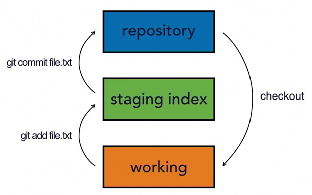
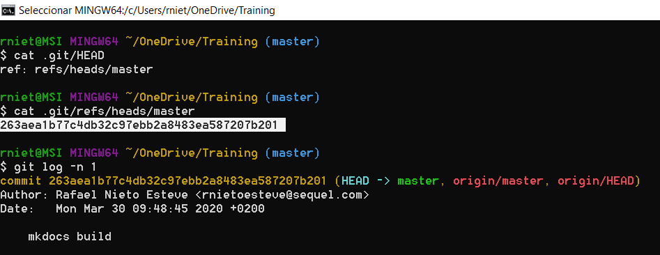

Git Essential Training: The Basics¶
Configuration¶
Install git from https://git-scm.com
- System: C:\Program Files\Git\etc\gitconfig:
git config --system --list - User: C:\Users\rniet.gitconfig:
git config --global --list - Project: my_project/.git/config:
git config --list
Other configuration settings:
git config --global user.name "Rafael Nieto"
git config --global user.email "rnietoe@gmail.com"
git config --global core.editor "code --wait"`
git config --list
Other basic commands:
- change to my user directory:
cd ~ - list all items (hidden as well):
ls -la - display a text file
cat .gitconfig
Getting started¶
- Initialize and clone a repository
git init git clone https://github.com/rnietoe/Training.git git clone https://github.com/rnietoe/Training.git local_repository_name - Stage and commit changes
git add . git commit -m "commit message" -
git log commands
git log git log -2 git log --since=2020-04-04 git log --until=2020-04-04 git log --until="3 days ago" git log -L 100,150:filename.txt git log --author="Rafael" git log --grep="bug" git log --oneline git log --stat git log --format=medium git log --format=short git log --format=oneline git log --graph --all --oneline --decorated- List logs as patches (diff)
git log --pathces git log -p
- List logs as patches (diff)
Git Concepts and Architecture¶



Make changes to files¶
Status¶
git status
- Untracked: created but unstagged yet
- Added: created and stagged ("cached")
- Modified
- Deleted
- Renamed
Differences¶
- compare the staging tree and your working directory
git diff - compare the repository and the staging tree:
git diff --stagged - show only the words that are different:
git diff --color-words
Other changes¶
- remove the file from the working directory and stage the change in a single git command:
git rm filename - rename filename as newname and stage the change in a single git command:
git mv filename newname
Commit all¶
Stage and commit all changes from working directory directly to the repository (instead to the staging tree)
git commit -all
git commit -am "commit message"
it does not include untracked files
Multiline commit message¶
git commit -a
.git/COMMIT_EDITMSG file is opened in our editor to enter a multiline commit message.
When git/COMMIT_EDITMSG file is closed, the commit is executed. The commit is aborted if commit message is empty.
Inspect a commit¶
git show HEAD
git show commitID
git show commitID --color-words
Use space or f to go forward in the paginator, b to go backward, / to search words and q to quit.
Compare commits¶
git diff commitID1..HEAD
git diff commitID1..commitID2
git diff commitID1..commitID2 --color-words
Undo changes¶
To discard changes in the working directory:
git checkout -- "filename"
git checkout -- .
To discard changes in the staging tree (to the working directory):
git reset HEAD filename
Amend/Edit commits¶
git commit --amend -m "new commit message"
It takes what's in staging and add it to the latest commit
amend command is also usefull to update the message of the latest commit
Retrieve old versions¶
Retrieve files with changes of desired commit ID
git checkout commitId -- .
git checkout commitId -- filename
Revert a commit¶
git revert commitID
Remove untracked¶
Remove untracked files from the working directory
git clean -n # display what would be removed
git clean -f # remove untracked files
Ignore files¶
project/.gitignore using:
- regexp with: * ? [aeiou] [0-9]. Sample of ignore all log files from logs directory:
logs/*.log.[0-9] - negative expressions with !: Sample of ignore all php files with *.php, but do not ignore index file with
!index.php - trailing slash /: Sample of ignore all files in a directory:
asset/videos/
# This is a comment in the project/.gitignore file
We should ignore:
- compiled source code
- packages and compressed files
- logs and databases
- Operative System generated files
- User-uploaded assets (images, PDFs, videos)
Ignore files globally¶
Ignore files globally (instead by project):
git config --global core.excludesfile ~/.gitignore_global
Ignore files to be tracked¶
git rm --cached filename
Track empty directories¶
Create .gitkeep file to track empty directories
touch dirname/.gitkeep